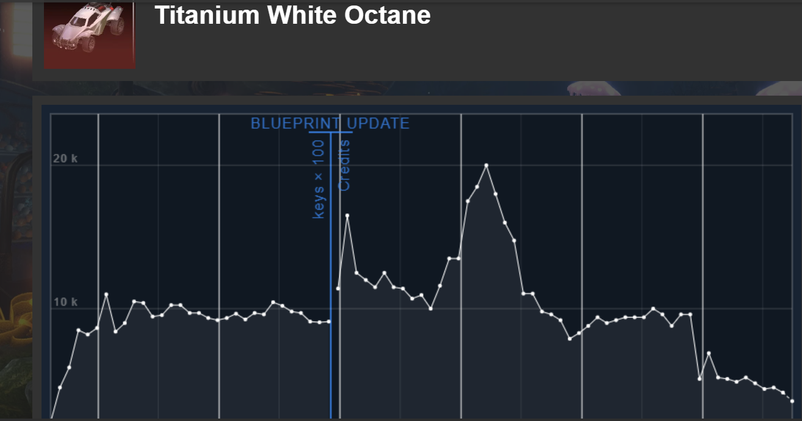

In Rocket League, you can customize your car using different items. There are over 6000 tradeable items and each one is unique. Rocket League uses an in game currency system called credits. 1000 Credits equates to about 10 dollars in real life.
Item acquisition:
You can obtain items through various means including recieving items at the end of a game, when you level up, or buying the rocket pass.
Rarity:
All items have rarities, ranging from common to Black Market. Rarity, however, doesnt have that much to do with the price of items.
Certification:
Some items have a chance of being certified, and these certifications track certain in game statistics when you have them on. The most expensive and sought after certification is striker, which tracks the amount of shots on goal you have while using the item.
Paint:
Similar to certifications, some items have the chance to be painted. There are 14 different paint colors in the game, and each has its own value for different items. Typially, the most expensive and sought after paint color is Titanium white or black, with crimson and sky blue being close behind. The least expensive color is typically Burnt Sienna.
Pricing and Negotiation:
The pricing isn't set by Epic Games themselves, but the Rocket League community. There are sites such as rl insider that tell you the prices of items. There is a lot of fluctuation in the market too, so it can be hard to gain money unless you are patient. Because of this, there is typically a lot of negotiation and haggling. You can offer items and/or credits for items.
The Rocket League market is very similar to investing in stocks. Item prices fluctuate constantly and you must be patient when you are trying to make money or have a really expensive item.
If you would like to take a look at the market in Rocket League, click here.